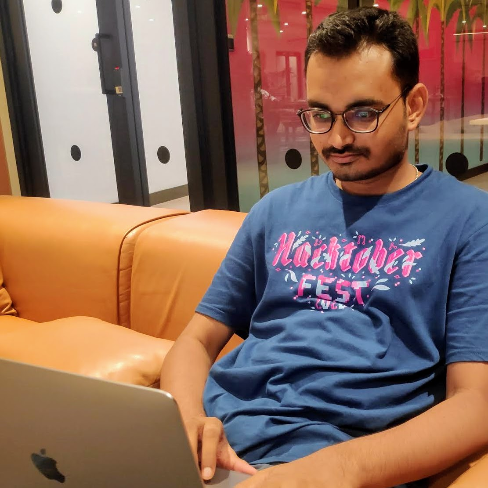

Sarbesh Kumar Sarkar
Senior Software Engineer - Microservice Developer
Bangalore, India
Senior Software Development Engineer with 5+ years of experience in developing robust, scalable and secure application based on Microservice architecture using Java, Spring Boot, Spring Cloud, ExpressJs, Nodejs, Redis, MySQL, MongoDB and Kafka. Strong knowledge of CyberSecurity and passionate about AI/ML. Can leverage use of AI tools like ChatGPT and Gemini to enhance efficiently and identify edge cases during development.
WORK EXPERIENCE
-
November,2021 - PRESENT
Senior Software Enginner
Rebel Foods
Bangalore, India- Architected and implemented a microservices-based inventory tracking and management system leveraging Spring Boot and Node.js.
- Migrated legacy data to a new database, enabling efficient scaling and performance.
- Optimized data processing with Kafka, reducing critical query execution time by 80% (from 100+ms to <20ms) and migrating suitable queries to Redshift for non-real-time data needs.
- Designed and implemented a robust retry mechanism for 100% data integrity, ensuring reliable data handling.
- Streamlined data entry with a BulkUpload feature, empowering users to upload large datasets (previously limited to single product uploads).
-
July,2019 - November,2021
Java Developer
TATA consultancy Service
Kolkata, India- Designed, developed, and maintained a microservices architecture for a banking client using Spring Boot and Spring Cloud framework, ensuring scalability and agility.
- Managed dynamic menus, dashboards, and feature/offer visibility on mobile devices based on customer segmentation and type, enhancing user experience and personalization.
EDUCATION
-
B.Tech in Electrical Engineering
Kalyani Government Engineering College
2015-2019
DGPA: 7.36
TECHNICAL SKILLS
- Languges : JAVA, Javascript, python
- Databases : MySQL, MongoDB, Redis
- Frameworks : Springboot, Expressjs
- Tools : Git, Docker, Jenkins
ACHIEVEMENTS
- Awarded for Taking Ownership at rebel foods.
- Awarded for Rapid Learner at rebel foods.
- Bruteforce 4.0 Cybersecurity Hackathon secured position in top 100 in the event organized by HackerEarth and CompTIA.
- Cybersecurity - Brute Force 2.0 secured position in top 100 in the event organized by HackerEarth and CompTIA
- Achieved Star Performer of the Month at Tata Consultancy Services.